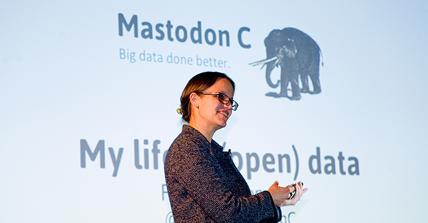

'The future's bright for UK tech' says Mastodon C
Two years ago, Mastodon C moved into the Open Data Institute’s very shiny and almost empty new offices, as its first incubated startup – just two of us, along with a couple of laptops and a cardboard box of wires and notebooks. Recently, I appeared Radio 4’s Today programme (the most popular programme on Radio 4, with 7 million listeners) to speak about our company as an example of the UK’s booming and innovative technology scene.
It feels like we’ve come a long way.

The Today programme was reporting from the huge American technology show CES. They asked me what the UK was like as an environment to grow a technology business. In particular, they wanted to know whether innovation here is as advanced or as interesting as the US tech companies that they had just been reporting on. I was very pleased to be able to honestly say that I think the UK has a great and very interesting technology scene, and one that’s very different in tone and style to Silicon Valley.
Something that we really excel at in the UK is having a strong culture of openness and sustainable growth in our startups.
We at Mastodon C have always been passionate about the benefits of openness in our and others’ businesses (whether open-source code or using open data) which is why it was great to join the ODI. We’ve found open culture to be one of the major drivers of growth for us.
We’ve been able to exploit the great open data sources that are available here, in order to help our clients gain greater insights to give them an edge in their businesses. We’ve also benefitted hugely from a culture of collaboration and sharing between the community of startups here, in particular collaboration with other ODI startups, which has been beneficial to all of us as we work together and build our various businesses.
The other area where I think the UK tech scene is excellent is in what’s sometimes called the ‘unsexy’ technology scene – we don’t have many world-leading consumer technology companies but we are great at building really solid and effective enterprise products and services that help businesses and governments to do things better behind the scenes.
At Mastodon C, the core of our work is helping very big or complex data to flow better, particularly in making it flow in ways that eventually make people’s lives better, whether in the built environment, energy or health sectors. Open data is obviously a critical component of making that information and insight flow between and about those organisations that affect all of our lives. The the UK is still a world leader in that field too.
Overall, the future’s looking bright for the UK tech and open data scene. We’re very happy to be here.
Read more about about Mastodon C here and follow @MastadonC on Twitter. Find out more about the ODI Startup programme and how to apply here.